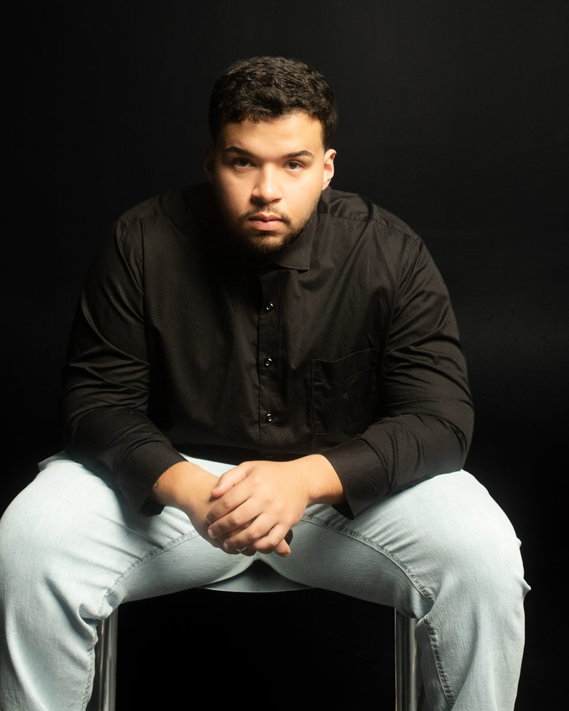

Euller Augusto Gonçalves Targino e Silva
Nutricionista ·
São Paulo – SP


Vocação para cuidar de pessoas
Graduado em Nutrição, com forte interesse no tratamento da obesidade, na educação nutricional e na saúde musculoesquelética.
Atuei durante um ano no centro de pesquisas do Centro Universitário São Camilo, oferecendo atendimento voluntário a pessoas idosas em situação de vulnerabilidade. Foi nesses atendimentos que descobri minha real vocação: cuidar de pessoas.
Tive a oportunidade de ensinar e cuidar de diversos pacientes ao longo da minha jornada, e ainda tenho um longo caminho pela frente. Aprimorei a comunicação e o trabalho em equipe em apresentações em congressos multiprofissionais e no atendimento multiprofissional.
Áreas de interesseObjetivo profissional
Procuro oportunidades para colocar em prática tudo o que aprendi em sala de aula e no contato humano em cada atendimento ao longo deste último ano de estágios e iniciação científica. Quero aprender com cada atendimento e com o trabalho em equipe, e contribuir com o que construí até aqui.
Vamos conversar?
Estou disponível para oportunidades em nutrição clínica, esportiva e no tratamento da obesidade. Clique em um dos contatos para copiar ou abrir.